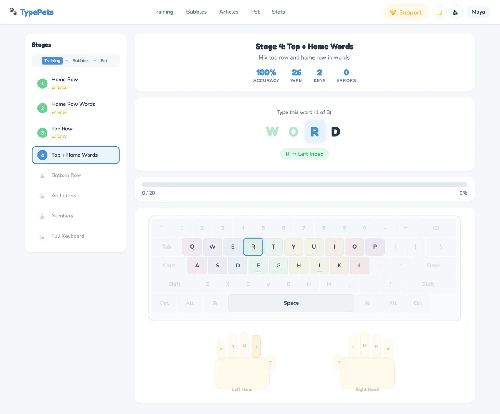
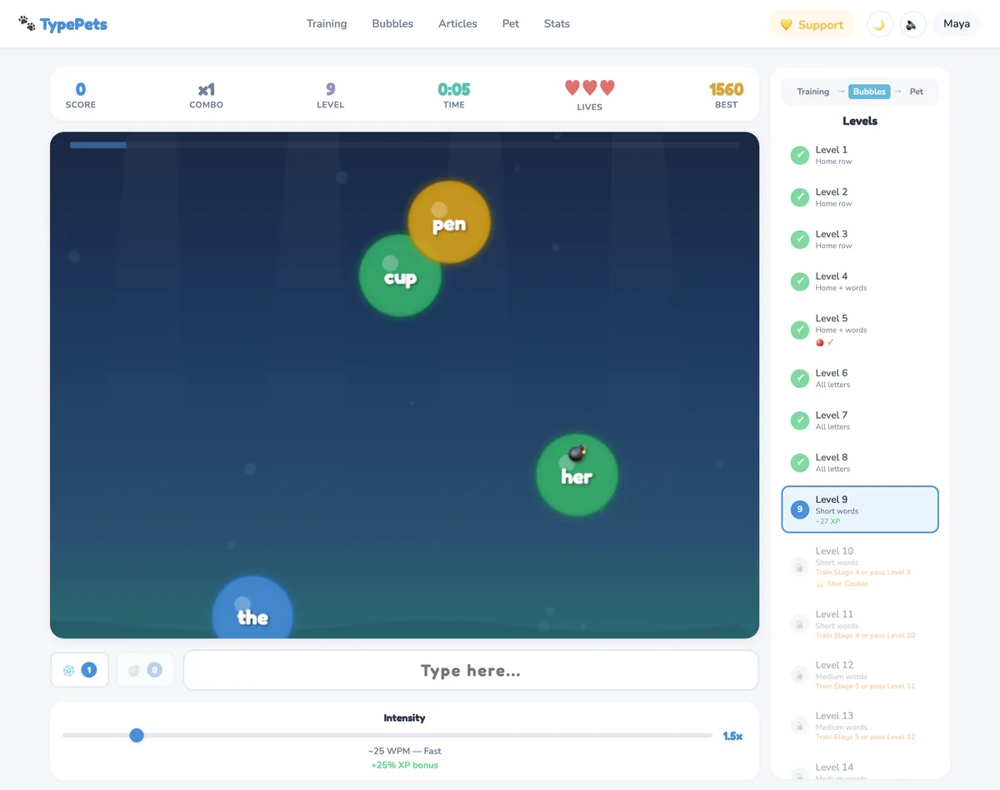
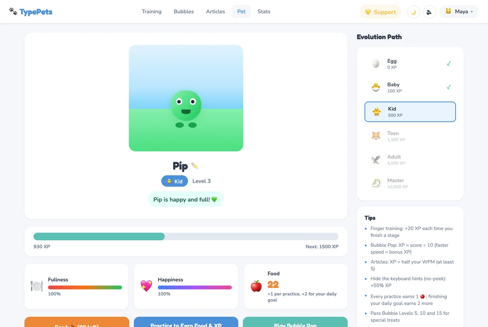
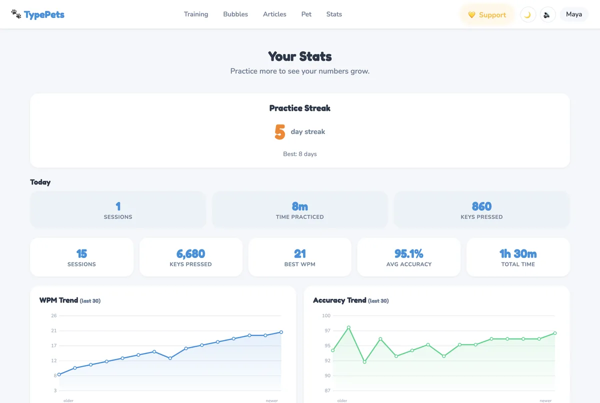

The free typing tutor that teaches kids proper finger placement through step-by-step lessons, games, reading practice, and a virtual pet that grows as they improve. No signup. No ads. Nothing to install.
Works in any modern browser: Chromebooks, laptops, desktops, and iPads.
No boring drills. Real games, real progress, real motivation.
Learn correct finger positions in 8 short stages. Color-coded keys show which finger goes where, starting with the home row and building up to the full keyboard.
Pop floating bubbles by typing the letters and words inside them. 20 levels that get progressively harder, from single letters to words and whole phrases.
Type 26 kid-friendly articles about science, animals, space, history, and sports, then race a ghost of your own best run to beat your time. Real reading, not random letter drills.
Grow a virtual pet from an egg to a master creature. Practice earns XP and the food that keeps your pet happy, so it only grows when you type.
The app notices which keys are hardest for you and brings them up more often. New levels unlock as skills grow, so kids stay challenged but not frustrated.
Speed and accuracy charts, a tricky-keys heatmap, badges, printable certificates, and a one-page report for parents and teachers.
Real screens from the app, exactly what your child will see.

Eight short stages take kids from the home row to the full keyboard. Color-coded keys and an on-screen hand guide show exactly which finger to use for every letter.

20 levels grow from home-row letters to short words, longer words, and whole phrases. Finishing training stages unlocks new levels, so the game always matches what kids have learned.

Every session earns XP, and the pet evolves from an egg through six stages. Pets get hungry, and the only way to earn food is to practice. There's nothing to buy and no shortcuts.

The Stats dashboard tracks streaks, practice time, speed, and accuracy over time. Speed only counts correctly typed characters while a child is actively typing, so a break never drags a score down.
A typing tutor built the way we'd want one for our own kids.
No accounts, no ads, and no tracking cookies. Progress is saved in the browser on your own device and never leaves it. There's no child data for anyone to collect, sell, or leak.
Stars reward careful, correct typing rather than raw speed. Speed counts only correct characters during active typing, so pauses don't hurt, and mistakes are treated as practice, not failure.
A structured finger-technique course from the home row to the number row, with Bubble Pop and reading practice to build speed once the technique is in place.
The pet grows only from XP and food earned by typing. No shop, no loot boxes, no in-app purchases. The only way forward is to practice.
Print a certificate when a stage, level, or article is done, and a one-page report for a parent check-in or a conference.
Every feature, for every child, at no cost. There's no premium tier. TypePets is kept running by optional donations from families who love it.
Students open a link and start typing. There are no student accounts and TypePets collects no student data, so there's no roster to upload and no data-sharing agreement to sign. If your school reviews new sites, our privacy policy is one short page.
Classroom links open a specific exercise with a countdown timer. Add stage (Finger Training stage 1–8) or article (reading passage 1–26) and min (minutes). A teacher link opens the lesson even if a student hasn't unlocked it yet, and the countdown starts when they press the first key. When time is up, students see a summary card, with a link to print a certificate, to show you.
https://typepets.com/pages/training.html?stage=1&min=10
Opens Stage 1 (Home Row) with a 10-minute timer.
https://typepets.com/pages/articles.html?article=3&min=15
Opens reading passage #3 with a 15-minute timer.
Pick a lesson and a time limit, then copy the link or post it straight to Google Classroom.
Set up in seconds with no emails or passwords. Each child gets their own profile and pet, and a simple save code keeps everyone's progress safe.
Not sure where to start? Our guide to teaching kids touch typing covers the right age to begin, how much to practice, and how to keep it fun. For realistic targets, see typing speed goals by grade.
Each child gets their own profile, pet, and progress on the same browser.
Copy a save code to back up progress, then restore it on another browser or after clearing data.
Runs in Chrome, Edge, Safari, or Firefox. Nothing to install, nothing to update.
Tap the typing area to use the on-screen keyboard, though a physical keyboard is best for learning to type by touch.
A few minutes a day adds up. A streak freeze keeps one off day from breaking the streak.
Optional voice hints, spoken by your device's built-in voices, say which finger to use. Great for kids still learning to read.
No signup. No installation. Just open and start.
Pick Finger Training to learn proper technique, Bubble Pop for a fast-paced game, or Read & Type to practice with real articles.
Practice at your own pace. The color-coded keyboard shows where each finger goes. Speed and accuracy are tracked automatically.
Every session earns XP and food for your pet. It evolves from an egg through six stages. More practice = bigger, cooler pet.
Yes, 100% free. No signup, no premium tier, no ads, and no in-app purchases. Every feature is available right away. TypePets is kept running by optional donations.
No. Progress is saved in your browser's local storage on your own device and is never uploaded. There are no accounts, no ads, and no tracking cookies. We use Cloudflare Web Analytics, a privacy-first tool that doesn't use cookies or track individuals, to count page visits. See our privacy policy.
TypePets is designed for kids ages 7–12 who are learning to touch type. Lessons start with just a few home-row keys, so younger beginners can keep up, and later stages and games give more confident typists a real challenge.
Yes. Up to four kids can each have their own profile on the same browser, with their own pet, progress, and stats. Switch profiles inside the app. No emails or passwords are needed.
Progress is stored in the browser on that device, so clearing browsing data or moving to a different computer starts fresh. To keep it safe, make a Pet Passport: a save code you can copy and keep somewhere safe, then paste into TypePets on any browser to restore your progress. Making a new one every week or so is a good habit.
Yes. TypePets runs in Chrome with nothing to install, so it works on home and school Chromebooks. Chromebook keyboards have a Search or Launcher key where Caps Lock usually is and a row of shortcut keys instead of F1–F12, which doesn't get in the way of letter practice. If a school Chromebook clears data when students sign out, use a Pet Passport code to carry progress between sessions. More in our Chromebook typing guide.
Yes. TypePets works on iPads and other tablets: tap the typing area to bring up the on-screen keyboard. For learning touch typing, a physical keyboard is best (a keyboard case or an inexpensive Bluetooth keyboard works well), because kids need to feel the keys and the bumps on F and J.
Yes. The Stats dashboard shows speed and accuracy over time, which keys are trickiest, and badges earned. You can also print a one-page progress report with practice minutes, speed and accuracy trends, weakest keys, and completed lessons, plus certificates for finished training stages, Bubble Pop levels, and articles.
No. There are no student accounts and no student data leaves the device, so there is nothing to roster. Teachers can share a classroom link that opens a specific lesson with a timer, for example https://typepets.com/pages/training.html?stage=1&min=10 opens Stage 1 with a 10-minute countdown. See For teachers to build one.
For now, TypePets supports the QWERTY keyboard layout and English practice text only. Other layouts such as AZERTY, QWERTZ, or Dvorak, and other languages, aren't supported yet.
Every practice session earns XP. Your pet starts as an egg and evolves through 6 stages: Egg, Baby, Kid, Teen, Adult, and Master. Pets also get hungry, and the food to feed them is earned by practicing, so the pet only grows when your child actually types. There is nothing to buy.
10–15 minutes a day is plenty for most kids aged 7–12. Short daily sessions build muscle memory faster than one long session a week. You can set a daily goal in the app, and a streak freeze keeps one off day from breaking a streak. See typing goals by grade for realistic targets.